| Name |
Image |
Tier |
Pool |
Description |
Flavor |
| Broken Ruby |
 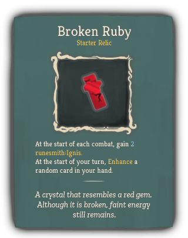 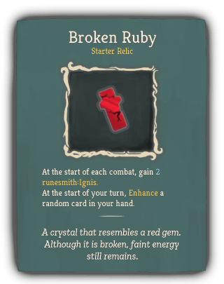 |
Starter |
Runesmith_beige |
At the start of each combat, gain 2 runesmith:Ignis.
At the start of your turn, Enhance a random card in your hand. |
A crystal that resembles a red gem. Although it is broken, faint energy still remains. |
| AutoHammer |
 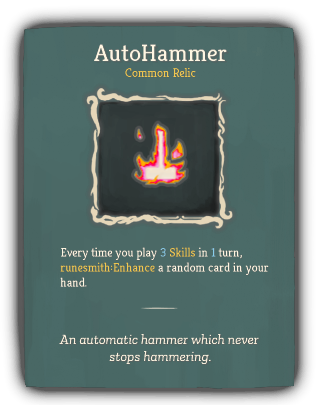 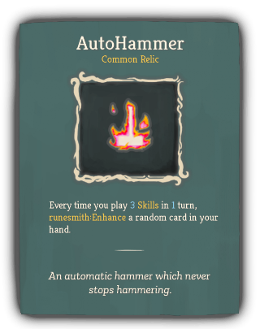 |
Common |
|
Every time you play 3 Skills in 1 turn, runesmith:Enhance a random card in your hand. |
An automatic hammer which never stops hammering. |
| Emergency Provisions |
 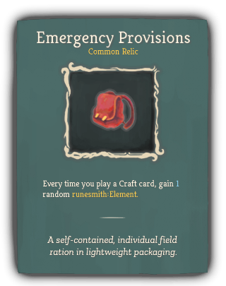 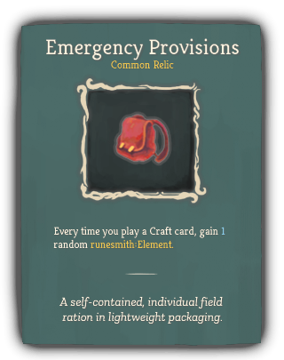 |
Common |
Runesmith_beige |
Every time you play a Craft card, gain 1 random runesmith:Element. |
A self-contained, individual field ration in lightweight packaging. |
| Minicore |
 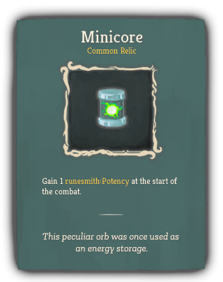 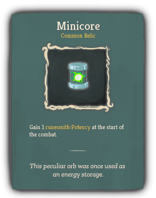 |
Common |
Runesmith_beige |
Gain 1 runesmith:Potency at the start of the combat. |
This peculiar orb was once used as an energy storage. |
| Nanobots |
 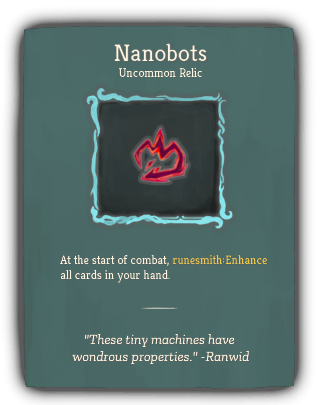 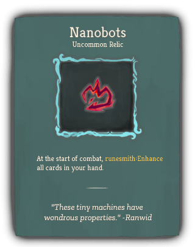 |
Uncommon |
|
At the start of combat, runesmith:Enhance all cards in your hand. |
"These tiny machines have wondrous properties." -Ranwid |
| Locket |
 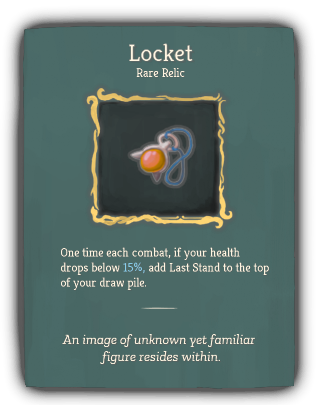 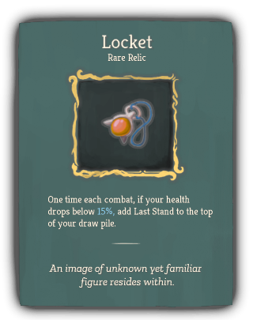 |
Rare |
Runesmith_beige |
One time each combat, if your health drops below 15%, add Last Stand to the top of your draw pile. |
An image of unknown yet familiar figure resides within. |
| Core Crystal |
 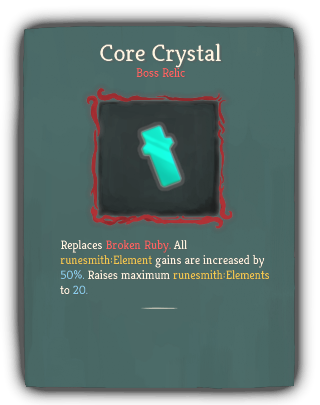 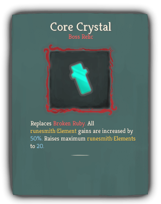 |
Boss |
Runesmith_beige |
Replaces Broken Ruby. All runesmith:Element gains are increased by 50%. Raises maximum runesmith:Elements to 20. |
|
| Pocket Reactor |
 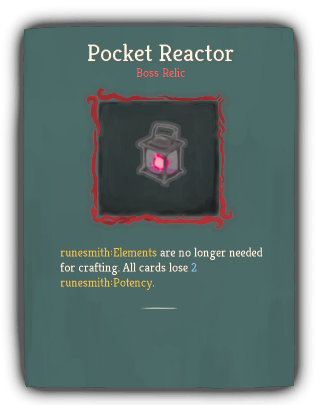 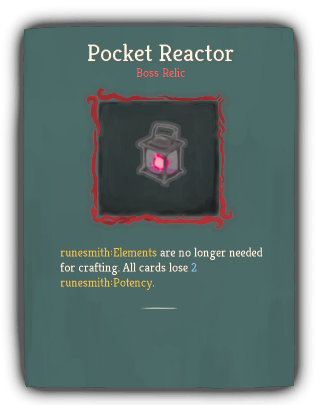 |
Boss |
Runesmith_beige |
runesmith:Elements are no longer needed for crafting. All cards lose 2 runesmith:Potency. |
|
| Uranium Anvil |
 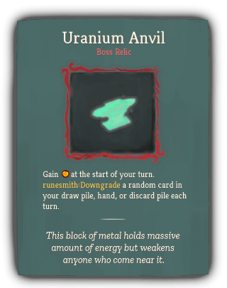 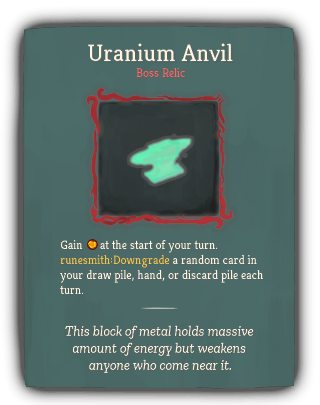 |
Boss |
|
Gain [E] at the start of your turn. runesmith:Downgrade a random card in your draw pile, hand, or discard pile each turn. |
This block of metal holds massive amount of energy but weakens anyone who come near it. |
{kind=link}
{kind=link}
{kind=link}
{kind=link}
{kind=link}
{kind=link}
{kind=link}
{kind=link}
{kind=link}